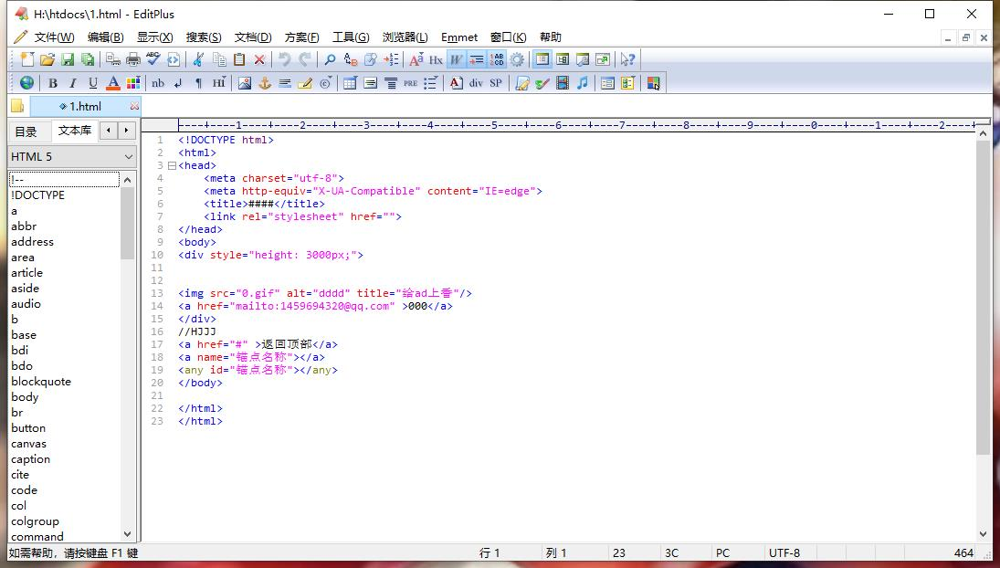
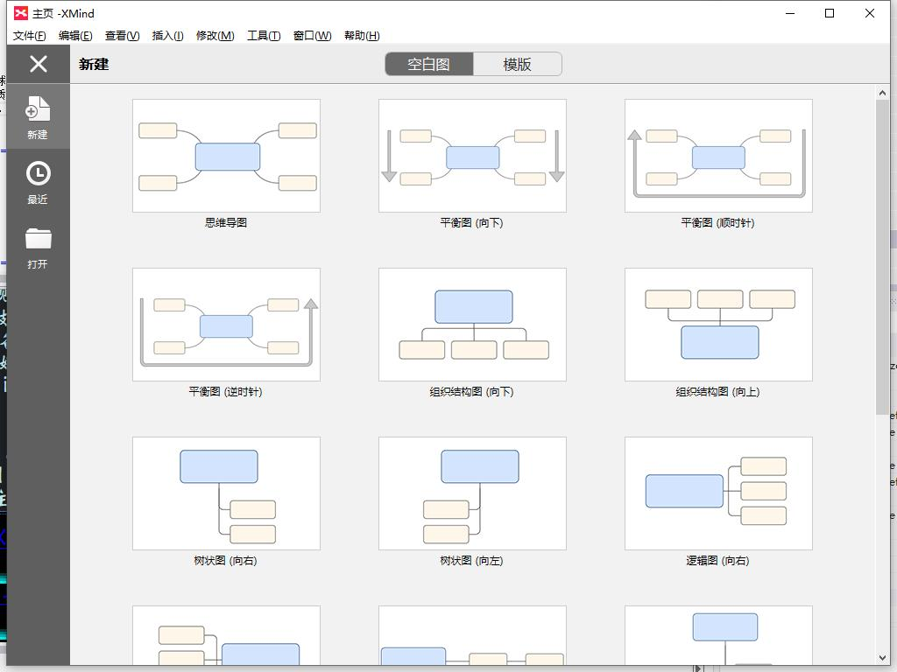
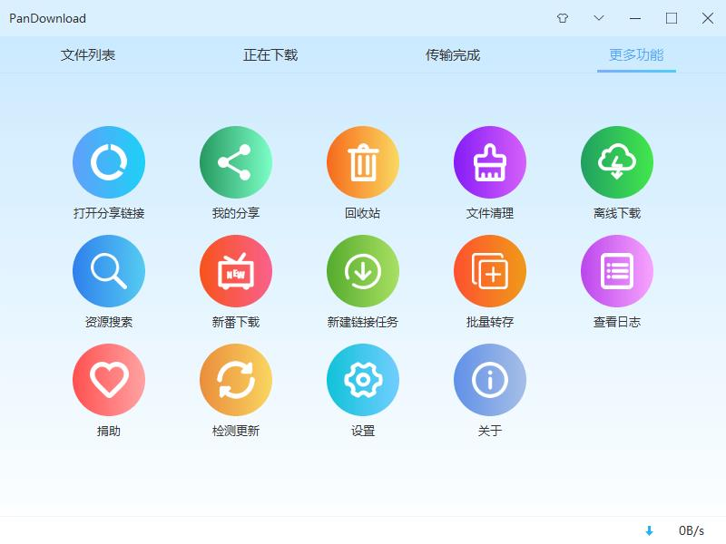
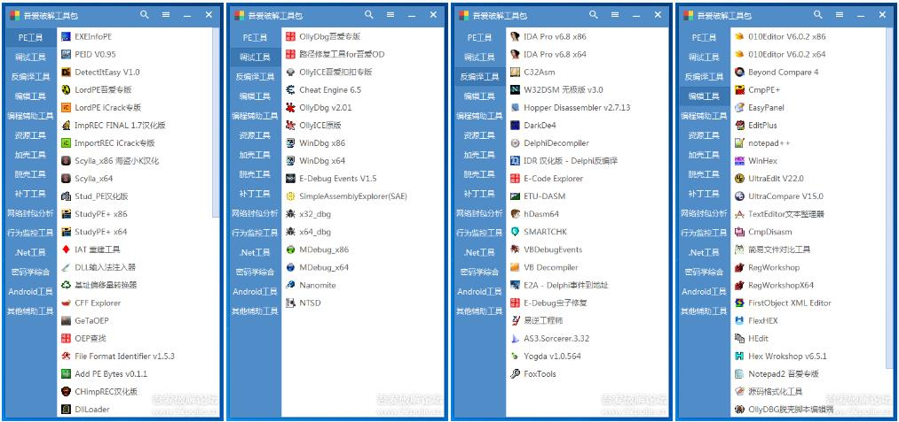

editPlus5.0
EditPlus是一款由韩国 Sangil Kim （ES-Computing）出品的小巧但是功能强大的可处理文本、HTML和程序语言的Windows编辑器，
你甚至可以通过设置用户工具将其作为C,Java,Php等等语言的一个简单的IDE。
是一套功能强大，可取代记事本的文字编辑器，拥有无限制的撤消与重做、英文拼字检查、自动换行、列数标记、搜寻取代、同时编辑多文件、全屏幕浏览功能。
而它还有一个好用的功能，就是它有监视剪贴板的功能，同步于剪贴板可自动粘贴进 EditPlus 的窗口中省去粘贴的步骤。
另外它也是一个非常好用的HTML编辑器，它除了支持颜色标记、HTML 标记，同时支持C、C++、Perl、Java，
另外，它还内建完整的HTML & CSS1 指令功能，对于习惯用记事本编辑网页的朋友，它可帮你节省一半以上的网页制作时间，
若你有安装IE3.0 以上版本，它还会结合IE浏览器于 EditPlus 窗口中，让你可以直接预览编辑好的网页（若没安装IE，也可指定浏览器路径）。
因此，它是一个相当棒又多用途多状态的编程软件。
主要特点
1．默认支持HTML、CSS、PHP、ASP、Perl、C/C++、Java、JavaScript和VBScript等语法高亮显示，通过定制语法文件，可以扩展到其他程序语言，在官方网站上可以下载（大部分语言都支持）。
2．EditPlus提供了与Internet的无缝连接，可以在EditPlus的工作区域中打开Intelnet浏览窗口。
3．提供了多工作窗口。不用切换到桌面，便可在工作区域中打开多个文档。
4．正确地配置Java的编译器“Javac”以及解释器“Java”后，使用EditPlus的菜单可以直接编译执行Java程序。
总之，EditPlus功能强大，界面简洁美观，且启动速度快；中文支持比较好；支持语法高亮；支持代码折叠；支持代码自动完成(但其功能比较弱)，不支持 代码提示功能；配置功能强大，且比较容易，扩展也比较强。
像PHP、Java程序等的开发环境，只要看一下资料，几分钟就可以搞定配置，很适合初学者学习 使用。有不错的项目工程管理功能。内置浏览器功能，这一点对于网页开发者来说很是方便。
(个人更喜欢Sublime Text)

X-mind思维导图工具
XMind 是一款非常实用的商业思维导图软件，应用全球最先进的Eclipse RCP 软件架构，全力打造易用、高效的可视化思维软件，强调软件的可扩展、跨平台、稳定性和性能，致力于使用先进的软件技术帮助用户真正意义上提高生产率。
XMind采用Java语言开发，具备跨平台运行的性质,可支持插件，插件通过编写XML清单文件可以扩展系统定义好的扩展点。XMind的程序主体由一组插件构成，包括一个核心主程序插件、一组Eclipse运行时插件、一个帮助文档插件和一组多语种资源文件插件。Eclipse用户会对它的界面非常亲切。
XMind不仅可以绘制思维导图，还能绘制鱼骨图、二维图、树形图、逻辑图、组织结构图（Org、Tree、Logic Chart、Fishbone）。并且，可以方便地从这些展示形式之间进行转换。可以导入MindManager、FreeMind数据文件。灵活的定制节点外观、插入图标。丰富的样式和主题。输出格式有：HTML、图片。

手机PanDownload
PanDownload是一款坚持以用户体验为中心，畅快淋漓的下载为理念而打造的下载工具。
PanDownload高速网盘采用了Aria 2技术，支持离线下载、新番下载、提取下载链接、自定义Aria2配置、自定义分享密码，原理类似油猴脚本+IDM，
软件获取直链后调用Aria2进行下载，登陆网盘账号获取自己的网盘资源下载,即便是账号已经被百度网盘限速的用户亦可正常使用。
经过百度封号风波后该工具的下载速度比以前慢些，不过依然要比百度官方版动辄10KB 每秒的速度快得多。
另外本工具支持提取直接下载链接复制到IDM或者迅雷中下载，这种下载方式亦可极大地提高文件下载速度。

吾爱破解工具包
工具包内核由音速启动(VStart)替换为Rolan
PE工具
ExeinfoPE 0.0.3.8-860+4sign -> 0.0.4.1-902+35sign
DetectItEasy 0.9.7->1.0
Scylla x86 -> 笔者汉化
新增PE提取工具 修改为吾爱专版
新增DLL输入法注入器
新增IAT重建工具
新增Resource Binder V2.6
新增基址偏移量转换器
调试工具
OD v2.01新增护眼配色方案
吾爱破解论坛专用OD已经更新至2016/01/21最新版本
WinDbg 6.12->6.3.9600
新增CheatEngine 6.5
反编译工具
IDA v6.6->v6.8 测试稳定，F5稳定，附带第一次使用说明文档
FolderMonitor闪退，从工具包中删除
Interactive Delphi Reconstructor 英文版->汉化版
新增E-Code Explorer 0.86
新增hDasm64
VB Decompiler V10.0->V10.1
新增E2A
新增E-debug
新增易逆工程师
编辑工具
010 Editor v3.0.3->v6.0.2，均为Crack版本，新增64位，第一次启动请按目录下面ReadMe.txt的注册码注册
EverEdit因为加了VMP强壳，3.7版本后几乎没有破解，而且该国产软件过于轻量级，所以从工具包中剔除。
新增RegWorkShop v4.6.3 x86_x64版本，一款注册表编辑器
新增两款简易的文件对比工具
资源工具
新增两款快捷图标替换工具
加壳工具
ASPack新增 V2.38
ThemIDA v2.35->v2.37，包含x86和x64版本
WinLicense删除所有旧版本，使用新版v2.37代替
脱壳工具
剔除命令行工具File Scanner
QuickUnpack无法正常加载服务和驱动，剔除之
补丁工具
新增AT4RE Patcher v0.6.1
新增通用特征码查找替换补丁工具 v0.6
新增KeyGen Creator(内存注册机生成器)
新增PYG官方优雅DLL劫持补丁制作工具 x86_x64两个版本
新增PYG官方内存补丁制作工具
新增XH补丁制作工具
网络封包分析工具
剔除几个不能制作位便携包的安装型工具
新增封包捕获必备驱动WinPcap 4.1.3的安装包，第一次使用时候安装即可
新增WireShark封包神器的便携版，无需安装，有WinPcap即可使用
行为监控工具
PowerTool重大更新
Autoruns 13.01->13.51
PCHunter v13.5->v14.0
XueTr已经被PCHunter替代，旧版的XueTr已经不能在64位系统下正常加载驱动，剔除之
原FoldMonitor及网上版本均无法正常运行（可能只在XP系统下有效），剔除之
SysinternalSuite套件全更新
密码学综合工具
新增一款AES DES RC2 RC4 3DES加密解密工具
.Net工具
GrayWolf替换为纯净版
dnSpy v1.0.1.0->v1.5.0.0
新增ILSpy工具
新增CLR_Injection通用托管注入工具 x86_x64
剔除Dis#,DILE工具，无法正常运行（可能只在XP系统有效）
新增ILHelper工具
Android工具
新增JEB 1.5版本
新增Smali2JavaUI工具
Androidkiller v1.2->v1.3.1
新增易用API伴侣
新增精易编程助手
新增汇编转字节集
新增SpyLite
新增易语言API助手
新增查询API属于哪个库功能
新增浮点数转16进制工具
其他工具 --- 巧用空项目进行简单二次分类
等
